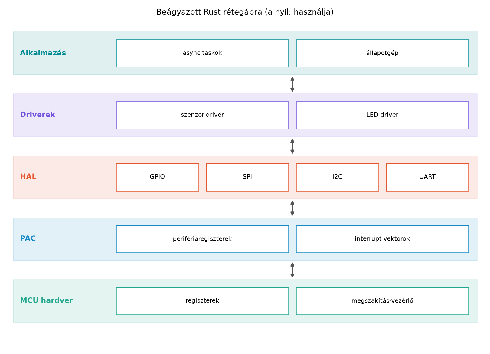

Egy tapasztalt C++ beágyazott fejlesztő pontosan tudja, milyen érzés,
amikor a hibakeresés nem a logikáról, hanem arról szól, hogy valamelyik
megszakításkezelő túlírta a másik regiszterét. A C++11–C++20 hiába ad
RAII-t, okosmutatókat és erős típusokat, a tipikus beágyazott C/C++ kód
mégis gyakran makrókba, volatile pointerekbe, kézi
regisztercímekbe és globális perifériaobjektumokba fut. A
GPIOB->ODR |= (1 << 5) stílusú sorok nem
típusbiztosak, semmi nem akadályozza meg, hogy egy bemenetre konfigurált
lábon feszültséget írjunk, és az ownership hiánya mindenféle rejtett
aliasolási hibát enged.
A Rust válasza erre nem csupán „más szintaxis”, hanem a típusrendszer
és az ownership bevonása a hardver erőforrásainak modellezésébe. Ugyanaz
a Rust, amit a host-oldali rkv szerverben megismertünk, std
nélkül is működik mikrovezérlőn. Amit a Pin, Unpin,
async trait-ek és Send-határok és a Newtype,
PhantomData, typestate és const generikusok alfejezetekben
tanultunk, most a fizikai hardveren kap szerepet.
Definíció. A no_std környezet olyan
Rust-környezet, amelyben a std könyvtár nem érhető el. A
std a core és az alloc fölé épül,
és olyan szolgáltatásokat ad, mint a thread, a fájlrendszer, a dinamikus
időzítés vagy a standard I/O. A no_std tehát nem azt
jelenti, hogy semmilyen könyvtár nincs.
Szabály. #![no_std] crateszintű
attribútummal a crate lemond a std-ről. Ekkor a
core könyvtár automatikusan elérhető: ez tartalmazza a
legalapvetőbb elemeket, például az Option,
Result, Iterator, Clone,
Copy, Send, Sync,
Sized, a slice és a str
típusokat, valamint a core::ptr, core::mem,
core::ops, core::fmt modulokat. Az
alloc könyvtár a Vec, String,
Box, Arc és hasonló, kupacot igénylő típusokat
biztosítja. Egy könyvtárban ehhez elég az
extern crate alloc; és az alloc::… import; a
globális allokátort (#[global_allocator]) a végső
binárisnak kell biztosítania, nem a könyvtárnak (lásd a
háromszintű táblázatot lentebb).
Szabály. A std-től megfosztott bináris
programban nincs normál main; helyette
#![no_main] attribútumot használunk, és a belépési pontot a
platform adja: Cortex-M-en a cortex-m-rt
#[entry] makrója (és a reset-vektor), más célon saját,
#[unsafe(no_mangle)] pub extern "C" belépési függvény (a
2024-es editionben a no_mangle unsafe(...)
alakú). #![no_std] binárisban kötelező egy
#[panic_handler] függvény, amely
fn(&PanicInfo) -> ! szignatúrájú, és soha nem tér
vissza.
Három szint, három követelményhalmaz. A „no_std” szó három különböző dolgot takarhat, és csak a harmadikhoz kell minden:
| Szint | Mit használ | Mit igényel | Ellenőrzés |
|---|---|---|---|
| 1. core-only könyvtár | csak core |
semmit a fordításhoz | cargo check --lib (host és célplatform) |
| 2. alloc-ot importáló könyvtár | extern crate alloc; +
use alloc::vec::Vec; |
a könyvtárhoz nem kell allokátor, a használóhoz igen | cargo check --lib --target thumbv7em-none-eabihf |
| 3. végső no_std bináris | az egész lánc | #[global_allocator] (ha van alloc),
#[panic_handler], belépési pont, linker-szkript és
memory.x |
célplatformos cargo build, majd hardveres vagy emulált
futtatás |
A hostteszt (cargo test a fejlesztői gépen) a
std tesztfuttatóját használja, ezért nem
bizonyítja, hogy a kód célplatformon fordul vagy fut; hardveres
validációnak sem számít. Az alloc-os könyvtár célplatformos
cargo check --lib lépése allokátor nélkül sikeres
(kipróbáltuk thumbv7em-none-eabihf-re), a belőle linkelt
bináris viszont
error: no global memory allocator found but one is required; link to std or add #[global_allocator] to a static item that implements the GlobalAlloc trait
hibával áll meg, amíg nincs allokátor.
Definíció. A beágyazott Rust-ökoszisztéma szokásos rétegződése: PAC (Peripheral Access Crate), HAL (Hardware Abstraction Layer), embedded-hal traitek, majd driverek és alkalmazás. A PAC a gyártó által definiált regiszterek szintjét adja, a HAL típusbiztos, kényelmes periféria-API-t, az embedded-hal traitek pedig gyártófüggetlen interfészeket.
Szabály. A perifériák szingletonok: minden fizikai
periféria — például egy GPIO-blokk vagy egy lába — egyetlen
Rust-értékként jelenik meg, amelynek nincs Clone és
Copy implementációja, a konstruktora pedig privát. A
perifériák együttes birtokosa a Peripherals struktúra,
amelyet a take() ad vissza legfeljebb
egyszer: ez futásidejű egyszeriség (egy statikus
jelzőbit atomi cseréje; a második hívás None), nem
fordítási idejű. A fordító ezután a már megszerzett értékek
tulajdonjogát követi: egy lábat egy tulajdonos birtokol, az
üzemmód-átalakítás elfogyasztja a régit. A safe API invariánsa tehát:
egy fizikai lábhoz egyszerre legfeljebb egy érték létezik, amíg
senki nem kerüli meg a take()-et (valós PAC-okban erre
unsafe steal() való).
Definíció. A typestate minta a
periféria üzemmódját típusparaméterként ábrázolja: például
Pin<P, Input<Floating>> és
Pin<P, Output> különböző típusok. A konfiguráció
tehát fordítási időben rögzül, és a
Pin<P, Input<Floating>> típuson egyszerűen
nincs set_high metódus.
A tipikus C++ beágyazott GPIO-kezelő osztály így nézhet ki:
// cpp
class GpioPin {
public:
enum class Mode { Input, Output, InputPullUp };
void configure(Mode mode) {
mode_ = mode;
// ... registers ...
}
void set_high() {
// Feltételezi, hogy a láb Output módban van!
// ... registers ...
}
private:
Mode mode_;
};A C++ megoldásban az üzemmód futási idejű adattag, a
set_high() hívás helyessége a fejlesztő fegyelmén múlik.
Rossz üzemmód esetén a hiba legfeljebb futás közben derül ki, vagy
egyáltalán nem.
Rustban a typestate ezt a hibát fordítási időben zárja ki. Az alábbi
rkv-embedded crate teljes, lefordított és
tesztelt példa; a hardvert egy szimulált regiszter
(AtomicU16) helyettesíti, így gép nélkül is futtatható. Ez
önálló oktatópélda, nem az rkv része.
Kódblokk — fájl:
~/rust-labor/r050/rkv-embedded/Cargo.toml · művelet: teljes
csere · ellenőrzés: cargo test
[package]
name = "rkv-embedded"
version = "0.1.0"
edition = "2024"
rust-version = "1.89"
[dependencies]
[workspace]Kódblokk — fájl:
~/rust-labor/r050/rkv-embedded/src/lib.rs · művelet: teljes
csere · ellenőrzés: cargo test (a compile_fail
doctestek is)
//! Szimulált GPIO typestate-tel: önálló oktatópélda, nem az rkv része.
#![no_std]
use core::marker::PhantomData;
use core::sync::atomic::{AtomicBool, AtomicU16, Ordering};
/// Üzemmódok (típusszinten).
pub struct Input<MODE>(PhantomData<MODE>);
pub struct Floating;
pub struct PullUp;
pub struct Output;
/// Egy láb. `P` a lábszám a porton belül; csak a `Peripherals` hozhatja létre.
pub struct Pin<const P: u8, MODE> {
_mode: PhantomData<MODE>,
}
/// A szimulált port kimeneti regisztere (ODR). Valós hardveren ez egy memóriára leképezett,
/// a lábak között megosztott regiszter; ezért a bitműveletek atomiak (hardveren: BSRR).
static ODR: AtomicU16 = AtomicU16::new(0);
/// Futásidejű egyszeriség: a `take()` legfeljebb egyszer sikerül.
static TAKEN: AtomicBool = AtomicBool::new(false);
/// A port összes lába. Nem `Clone`, nem `Copy`; a konstruktora privát.
pub struct Peripherals {
pub pin5: Pin<5, Input<Floating>>,
pub pin6: Pin<6, Input<Floating>>,
}
impl Peripherals {
/// Első híváskor `Some`, utána mindig `None`.
pub fn take() -> Option<Self> {
if TAKEN.swap(true, Ordering::AcqRel) {
None
} else {
Some(Peripherals { pin5: Pin::new(), pin6: Pin::new() })
}
}
}
impl<const P: u8, MODE> Pin<P, MODE> {
/// Csak a modulon belül hívható; a lábszám a port tartományában van.
fn new() -> Self {
const { assert!(P < 16, "a portnak 16 lába van") };
Pin { _mode: PhantomData }
}
}
impl<const P: u8> Pin<P, Input<Floating>> {
pub fn into_pull_up_input(self) -> Pin<P, Input<PullUp>> {
Pin::new()
}
pub fn into_push_pull_output(self) -> Pin<P, Output> {
// A kimenet alapállapota alacsony.
ODR.fetch_and(!(1 << P), Ordering::AcqRel);
Pin::new()
}
}
impl<const P: u8> Pin<P, Output> {
pub fn set_high(&mut self) {
ODR.fetch_or(1 << P, Ordering::AcqRel);
}
pub fn set_low(&mut self) {
ODR.fetch_and(!(1 << P), Ordering::AcqRel);
}
pub fn is_set_high(&self) -> bool {
ODR.load(Ordering::Acquire) & (1 << P) != 0
}
}
/// ```compile_fail,E0599
/// use rkv_embedded::Peripherals;
/// let p = Peripherals::take().unwrap();
/// let mut input = p.pin5;
/// input.set_high(); // bemeneti lábon nincs set_high
/// ```
///
/// ```
/// use rkv_embedded::Peripherals;
/// let p = Peripherals::take().unwrap();
/// let mut out = p.pin5.into_push_pull_output();
/// out.set_high();
/// assert!(out.is_set_high());
/// ```
///
/// ```compile_fail
/// use rkv_embedded::Peripherals;
/// let p = Peripherals::take().unwrap();
/// let _out = p.pin5.into_push_pull_output();
/// let _use_after_move = p.pin5; // az átalakítás elfogyasztotta a lábat
/// ```
#[cfg(doctest)]
struct _Doctests;A külső (integrációs) teszt csak a nyilvános, safe API-t használja:
egy lábat kér a take()-ből, a második take()
sikertelen, a bemeneti láb set_high-t nem kap, az outputtá
alakítás után a hívás fordul, a másik láb ugyanazon a megosztott
regiszteren független bit.
Kódblokk — fájl:
~/rust-labor/r050/rkv-embedded/tests/gpio.rs · művelet: új
fájl · ellenőrzés: cargo test
use rkv_embedded::Peripherals;
#[test]
fn take_is_single_use_and_pins_follow_their_mode() {
let p = Peripherals::take().expect("az első take sikeres");
assert!(Peripherals::take().is_none(), "a második take sikertelen");
let mut led = p.pin5.into_push_pull_output();
assert!(!led.is_set_high());
led.set_high();
assert!(led.is_set_high());
// A másik láb ugyanazon a megosztott regiszteren független bit.
let mut other = p.pin6.into_push_pull_output();
other.set_high();
led.set_low();
assert!(other.is_set_high() && !led.is_set_high());
}Ellenőrzési pont. cargo test: az
integrációs teszt és a három doctest (köztük a két
compile_fail) zöld. A hibás használat ellenőrzött fordítói
kimenete: bemeneti lábon set_high → E0599 (no
method named set_high); a privát konstruktor kívülről →
E0624
(associated functionnewis private);
Pin<20, _> →
error[E0080]: evaluation panicked: a portnak 16 lába van (a
lábszám tartománya fordítási időben ellenőrzött).
Három szabály, amelyet a példa mutat, valós hardveren is érvényes:
P értékek. A
Pin<const P: u8, _> const generikus általános; a
tartomány (itt P < 16) a konstruktorban
const { assert!(..) }-tel fordítási időben kényszerített,
hogy Pin<20, _> ne létezhessen.set_high/set_low ezért
atomi bitművelet (hardveren a BSRR set/reset regiszter, nem
olvasás–módosítás–írás), különben két láb kezelése megszakítással
keresztezve elveszíthetné egymás bitjét.unsafe. Valós PAC fölött a
regiszterírás unsafe, és csak a legalsó rétegben él,
// SAFETY: megjegyzéssel; a példa szimulált regisztere
atomi, ezért safe.A Pin<P, Input<Floating>> értéken nincs
set_high: a metódus csak a
Pin<P, Output> típuson létezik. Az into_
konverziók felemésztik a régi értéket, és az új üzemmódnak megfelelő
típust adják vissza. Ez a destruktív mozgatás pontosan azt az
ownership-gondolkodást használja, amit az Ownership:
minden értéknek egy tulajdonosa van alapozott meg.
Az alábbi ábra a beágyazott Rust tipikus rétegződését mutatja:

A rétegek felülről lefelé haladva: az alkalmazás csak a driverek és a
HAL típusait látja. A PAC a gyártói regiszterek elrendezését írja le,
gyakran unsafe hozzáféréssel. A HAL ebből a nyers rétegből
biztonságos absztrakciót épít, és az Unsafe Rust:
szuperképességek és felelősség alfejezetben tanult elv érvényesül:
az unsafe blokkok a legbelső rétegbe kerülnek, a kívülről
látható API safe. Az embedded-hal traitek e fölé a
gyártóspecifikus HAL fölé helyeznek egy közös interfész-réteget. Egy
I2C-szenzor driver például nem az STM32 vagy RP2040 konkrét típusát,
hanem az embedded_hal::i2c::I2c trait implementációját
fogadja el, így a driver újrahasznosítható bármely támogatott MCU-n.
Az embedded-hal 1.0.0 (a Cargo.lock
szerinti verzió) a gyártófüggetlen illesztőket trait-csoportokban adja
(digital, i2c, spi,
serial stb.). A driverek nem konkrét HAL-típust, hanem
ezeket a traiteket fogadják el. Egy kimeneti láb vezérlése és a hoston
futtatható mock implementáció:
use embedded_hal::digital::{ErrorType, OutputPin, StatefulOutputPin};
/// Bármely embedded-hal kimeneti láb, a konkrét HAL-tól függetlenül.
fn blink_once<P: OutputPin>(pin: &mut P) -> Result<(), P::Error> {
pin.set_high()?;
pin.set_low()?;
Ok(())
}
/// Mock láb a hostteszthez: nem hardver, csak a trait szerződését valósítja meg.
struct MockPin {
high: bool,
}
impl ErrorType for MockPin {
type Error = core::convert::Infallible;
}
impl OutputPin for MockPin {
fn set_low(&mut self) -> Result<(), Self::Error> {
self.high = false;
Ok(())
}
fn set_high(&mut self) -> Result<(), Self::Error> {
self.high = true;
Ok(())
}
}
impl StatefulOutputPin for MockPin {
fn is_set_high(&mut self) -> Result<bool, Self::Error> {
Ok(self.high)
}
fn is_set_low(&mut self) -> Result<bool, Self::Error> {
Ok(!self.high)
}
}
fn main() {
let mut pin = MockPin { high: false };
blink_once(&mut pin).unwrap();
assert!(pin.is_set_low().unwrap());
}A blink_once generikus, ezért ugyanaz a függvény fut az
STM32 HAL-ján, az RP2040-en és a MockPinon; a mock hoston
is lefut, és a trait-szerződést teszteli. A valódi hardveren a
set_high/set_low a HAL implementációjában a
regiszterírást végzi; a hiba típusa HAL-onként eltér, ezt köti össze a
P::Error. A saját rkv-embedded
Pin típusára impl OutputPin adható, és akkor
egy erre épülő driver változtatás nélkül használja. A példát a rögzített
toolchainnel (embedded-hal 1.0.0) lefordítottuk és hoston
futtattuk.
A hagyományos beágyazott C++ kódban a nem blokkoló várakozást gyakran
megszakításokkal, callbackekkel vagy eseményzászlókkal oldjuk meg. A
Rust async a várakozási logikát lineáris kódban teszi írhatóvá, az
Embassy pedig ezt a modellt viszi beágyazott környezetbe: az executor
együttműködő (kooperatív) ütemezéssel futtatja a taskokat, a task akkor
alszik el, amikor .await-en vár, és a hardveres megszakítás
(időzítő, GPIO-él, UART) a Waker-en keresztül ébreszti fel.
Nincs operációs rendszer, nincs szál; a taskok statikusan foglalódnak,
kupac nem kell. A Future pollozását a Future-ök és async/await alfejezetben ismertük
meg.
Két példát adunk, és külön jelöljük a státuszukat:
thumbv7em-none-eabihf-re, hardveren nem futtatva):
megmutatja, honnan jön a #[panic_handler], és milyen
feature-ök kellenek.Használt verziók és feature-ök (a Cargo.lock szerint):
embassy-executor 0.10.0, embassy-time 0.5.1,
embassy-sync 0.8.0, critical-section 1.2.0,
embassy-futures 0.1.2, cortex-m-rt 0.7.7,
panic-halt 1.0.0.
Kódblokk — fájl: embassy-led/Cargo.toml ·
művelet: cargo new embassy-led, majd a fájl cseréje ·
ellenőrzés: cargo run
[package]
name = "embassy-led"
version = "0.1.0"
edition = "2024"
[dependencies]
critical-section = { version = "1", features = ["std"] }
embassy-executor = { version = "0.10", features = ["platform-std", "executor-thread"] }
embassy-sync = "0.8"
embassy-time = { version = "0.5", features = ["std"] }
[workspace]Kódblokk — fájl: embassy-led/src/main.rs ·
művelet: teljes csere · ellenőrzés: cargo run
//! Két Embassy-task közös LED-je, hoston futtatva (a LED szimulált).
use embassy_executor::Spawner;
use embassy_sync::blocking_mutex::raw::CriticalSectionRawMutex;
use embassy_sync::mutex::Mutex;
use embassy_time::{Duration, Timer};
/// Szimulált LED: a hardveres változatban egy kimeneti láb.
struct Led {
on: bool,
}
impl Led {
const fn new() -> Self {
Led { on: false }
}
fn toggle(&mut self, who: &str) {
self.on = !self.on;
println!("{who}: LED {}", if self.on { "be" } else { "ki" });
}
}
/// Statikus tároló: a taskok `'static` hivatkozást kapnak; nincs heap.
static LED: Mutex<CriticalSectionRawMutex, Led> = Mutex::new(Led::new());
#[embassy_executor::task]
async fn fast_blink() {
loop {
{
// A zár csak a szinkron művelet idejére él...
let mut led = LED.lock().await;
led.toggle("gyors");
} // ...itt elengedődik, mielőtt várakoznánk.
Timer::after(Duration::from_millis(300)).await;
}
}
#[embassy_executor::task]
async fn slow_blink() {
loop {
LED.lock().await.toggle("lassú");
Timer::after(Duration::from_millis(500)).await;
}
}
#[embassy_executor::main]
async fn main(spawner: Spawner) {
spawner.spawn(fast_blink().unwrap());
spawner.spawn(slow_blink().unwrap());
Timer::after(Duration::from_millis(1100)).await;
println!("kész");
std::process::exit(0);
}A megosztott LED egy static
Mutex<CriticalSectionRawMutex, Led>: a taskok
'static hivatkozást kapnak, kupac és Arc
nélkül. A két #[embassy_executor::task] függvény a
Spawner-ből indul
(spawner.spawn(task().unwrap())). A mutex-őr
(guard) csak a szinkron toggle idejéig él: a
fast_blink belső blokkban engedi el, mielőtt
Timer::after(..).await-re vár, így várakozás közben a másik
task hozzáfér a LED-hez. Egy őr, amelyet a .await fölött
tartanánk, a másik taskot kiéheztetné.
Ellenőrzött futás (a sorrend az időzítéstől függ):
lassú: LED be
gyors: LED ki
gyors: LED be
lassú: LED ki
gyors: LED be
gyors: LED ki
lassú: LED be
készA host-oldali Arc<Mutex<T>> (Mutex, RwLock, csatornák és a megosztott rkv)
beágyazott környezetben nem vihető át változtatás nélkül: kupacot,
operációs rendszert és blokkoló zárat feltételez, a megszakításkezelő
pedig nem várakozhat. A választást az dönti el, ki fér hozzá,
kell-e heap vagy atomika, és blokkolhat-e az ISR:
| Helyzet | Eszköz | Ki fér hozzá | Heap / atomika | Blokkolhat az ISR? |
|---|---|---|---|---|
| két task, ugyanazon az executoron | Mutex<NoopRawMutex, T> vagy
Channel<NoopRawMutex, ..> |
csak taskok, egy executor; nem Sync,
ezért nem lehet static (StaticCell kell) |
nincs heap, nincs atomika | nem használható ISR-ből |
| task–task, több executor vagy ISR is érinti | Mutex<CriticalSectionRawMutex, T> (a példa) |
taskok és (a blocking_mutex formával) ISR-ek |
nincs heap; a kritikus szakasz a megszakításokat letiltja | az ISR nem várhat .await-en; a kritikus szakasz alatt a
megszakítások késnek |
| ISR → task jelzés vagy üzenet | Signal::signal, Channel::try_send |
az ISR küld, a task .await-tel fogad |
nincs heap | nem blokkol: signal azonnali, a tele
csatorna Err-t ad |
| ISR és task közös számláló vagy zászló | AtomicU32, AtomicBool |
mindkettő | atomika (a MCU támogatásától függ) | nem blokkol |
A táblázat Signal/Channel sora lefordított
és futtatott példán alapul: egy másik szál játssza az ISR-t (hoston
nincs megszakítás), és signal-lel, illetve
try_send-del jelez a task felé:
Kódblokk — fájl:
embassy-led/examples/isr_to_task.rs · művelet: új fájl ·
ellenőrzés: cargo run --example isr_to_task →
jelzés: 7, esemény: 7
//! ISR-szerű jelzés: a küldő oldal nem várakozhat (`signal`, `try_send`), a task igen.
use embassy_executor::Spawner;
use embassy_sync::blocking_mutex::raw::CriticalSectionRawMutex;
use embassy_sync::channel::Channel;
use embassy_sync::signal::Signal;
use embassy_time::{Duration, Timer};
static BUTTON: Signal<CriticalSectionRawMutex, u32> = Signal::new();
static EVENTS: Channel<CriticalSectionRawMutex, u32, 4> = Channel::new();
/// Megszakításkezelő helyett egy szál játssza az ISR-t (hoston nincs megszakítás).
fn fake_isr(n: u32) {
BUTTON.signal(n); // nem blokkol
let _ = EVENTS.try_send(n); // tele csatornánál Err, nem várakozás
}
#[embassy_executor::task]
async fn consumer() {
let first = BUTTON.wait().await;
let second = EVENTS.receive().await;
println!("jelzés: {first}, esemény: {second}");
std::process::exit(0);
}
#[embassy_executor::main]
async fn main(spawner: Spawner) {
spawner.spawn(consumer().unwrap());
std::thread::spawn(|| fake_isr(7));
Timer::after(Duration::from_millis(500)).await;
}A negatív eset is ellenőrzött: ha a statikus
Mutex<CriticalSectionRawMutex, Led>-et
Mutex<NoopRawMutex, Led>-re cseréljük, a fordító
error[E0277]:*mut
()cannot be shared between threads safely hibával leáll,
mert a NoopRawMutex nem Sync.
A #[embassy_executor::main] makró az executor indítását
és a belépési pontot hozza létre. Nem generál panic
handlert. Egy #![no_std] binárisban a
#[panic_handler]-t külön kell megadni:
panic-halt (megáll), panic-probe, vagy saját
#[panic_handler]. Hiányában a linkelés előtt már a fordító
leáll.
Kódblokk — fájl: embassy-target/Cargo.toml ·
művelet: cargo new embassy-target, majd a fájl cseréje ·
ellenőrzés: cargo build
[package]
name = "embassy-target"
version = "0.1.0"
edition = "2024"
[dependencies]
cortex-m-rt = "0.7"
embassy-executor = { version = "0.10", features = ["platform-cortex-m", "executor-thread"] }
embassy-futures = "0.1.2"
panic-halt = "1"
[workspace]Kódblokk — fájl:
embassy-target/.cargo/config.toml és
embassy-target/memory.x · művelet: új fájlok (a
memory.x egy általános Cortex-M4 memóriatérkép; a valós
MCU-hoz a lapkaleírás szerint igazítandó) · ellenőrzés:
cargo build
[build]
target = "thumbv7em-none-eabihf"
[target.thumbv7em-none-eabihf]
rustflags = ["-C", "link-arg=-Tlink.x"]MEMORY
{
FLASH : ORIGIN = 0x08000000, LENGTH = 256K
RAM : ORIGIN = 0x20000000, LENGTH = 64K
}Kódblokk — fájl: embassy-target/src/main.rs ·
művelet: teljes csere · ellenőrzés:
rustup target add thumbv7em-none-eabihf && cargo build
→ létrejön a
target/thumbv7em-none-eabihf/debug/embassy-target
#![no_std]
#![no_main]
use core::sync::atomic::{AtomicU32, Ordering};
use embassy_executor::Spawner;
use embassy_futures::yield_now;
use panic_halt as _; // a #[panic_handler]-t ez a crate adja
static TICKS: AtomicU32 = AtomicU32::new(0);
#[embassy_executor::task]
async fn counter() {
loop {
TICKS.fetch_add(1, Ordering::Relaxed);
yield_now().await;
}
}
#[embassy_executor::main]
async fn main(spawner: Spawner) {
spawner.spawn(counter().unwrap());
}Ellenőrzött eredmény: a use panic_halt as _; sorral a
bináris lefordul és linkelődik (a debug ELF mérete 1 065 440 bájt); a
sor nélkül
error:#[panic_handler]function required, but not found.
A példa nem használ időzítőt: az
embassy-time a célon egy time drivert igényel, amelyet a
választott HAL ad (például az embassy-stm32 vagy az
embassy-rp), és amelyet itt nem választottunk. Ezért ez a
példa a fordítás/linkelés és a panic-kezelés igazolása, nem működő
firmware.
Munkakönyvtár: ~/rust-labor/r050/
A labor célja, hogy a no_std korlátait kis léptékben
megtapasztaljuk, mielőtt valódi mikrokontrolleres targetre váltanánk.
Készíts egy no_std könyvtárcrate-et, amely csak a
core-t használja:
mkdir -p ~/rust-labor/r050
cd ~/rust-labor/r050
cargo new --lib nostd-core --vcs none
cd nostd-coreA src/lib.rs tartalma:
// rust
#![no_std]
pub fn clamp(value: i32, min: i32, max: i32) -> i32 {
if value < min {
min
} else if value > max {
max
} else {
value
}
}
#[cfg(test)]
mod tests {
use super::*;
#[test]
fn clamp_bounds() {
assert_eq!(clamp(5, 0, 10), 5);
assert_eq!(clamp(-3, 0, 10), 0);
assert_eq!(clamp(11, 0, 10), 10);
}
}Fordítsd le és futtasd a teszteket:
cargo testA könyvtárcrate (1. szint) no_std módban is gond nélkül
fordul, mert nem használ std-t; a cargo test
itt hostteszt, nem célplatformos igazolás. Célplatformon:
rustup target add thumbv7em-none-eabihf && cargo check --lib --target thumbv7em-none-eabihf.
Próbáld ki, mi történik, ha Vec-et akarsz létrehozni a
clamp függvényben: Vec import nélkül a fordító
cannot find type hibát ad, mert a no_std
prelúdiumban nincs Vec. Az extern crate alloc;
és a use alloc::vec::Vec; sorokkal (2. szint) a könyvtár
lefordul allokátor nélkül is; allokátort csak a végső binárisnak kell
adni (3. szint).
Opcionális labor. A valós beágyazott futtatás
QEMU-ban vagy fizikai kártyán ennek a fejezetnek a keretein túlmutat, de
a teljesség kedvéért érdemes megemlíteni. Egy ARM Cortex-M target esetén
például a thumbv7em-none-eabihf target telepítése után egy
hasonló vázlat fordítható:
rustup target add thumbv7em-none-eabihfA teljes bináris futtatásához linker-szkript, boot-kód és a
célhardverhez illeszkedő memory.x is szükséges; ezek
tartalma a választott MCU-tól függ (a fejezet későbbi
embassy-target példája egy általános Cortex-M4
memóriatérképet használ). A QEMU-s emuláció beállításait a
cortex-m és cortex-m-rt crate-ek
dokumentációja írja le.
Vec és String használata
no_std kódban automatikusan. A
std-hez kötött típusok nem érhetők el. Egy no_std
könyvtárban az alloc engedélyezése az
extern crate alloc; sorral történik, és a könyvtár
fordításához nem kell allokátor; a végső
binárisban ezen felül #[global_allocator] is kell
a futtatáshoz. A Box, Rc, Arc és Weak
alfejezetben tanult Box is csak akkor érhető el, ha az
alloc jelen van; a lefoglalás futásidejű feltétele a
bináris allokátora.
A panic_handler hiánya. A
no_std binárisban a panic! makró futási idejű
hibát jelez, de ennek kezelése nincs beépítve. Fordítói/linkelési hiba
keletkezik, ha a program nem definiál #[panic_handler]-t. A
host-oldali std automatikusan ad panichandler-t, a
beágyazott világban ezt kézzel kell megadni.
A periféria-singleton megkerülése és a host-minták
átvétele. A take() által visszaadott periféria nem
Clone és nem Copy. A vágy, hogy két helyen is
hozzáférjünk ugyanahhoz a perifériához, unsafe pointerekhez
vagy steal()-hez csábít. A helyes út: a perifériát egyetlen
helyen birtokoljuk, és a megosztást a környezethez illő eszközzel oldjuk
meg (lásd a fenti táblázatot). A host-oldali
Arc<Mutex<..>> itt nem jó kiindulás: kupacot és
blokkoló zárat feltételez, a megszakításkezelő pedig nem
várakozhat.
A typestate kikerülése. Az
into_push_pull_output utáni
Pin<P, Output> típus nem engedi a bemeneti
konfigurációs metódust, de ha a fejlesztő a hardverregisztert
unsafe közvetlenül írja, akkor a typestate által adott
garancia elveszik. A szabály itt is: az unsafe csak a
legalsó rétegben, világos // SAFETY: indoklással.
Fogalmi kérdés. Mondd meg, melyik típus érhető
el #![no_std] környezetben alloc nélkül:
Option, String, Vec,
Result, Arc, core::iter::Map.
Indokold.
C++-kód átírása idiomatikus Rustra. Adott egy
C++ generátorfüggvény, amely egy std::vector<int>-et
ad vissza, és egy beágyazott hőmérséklet-szenzor kalibrációs értékeit
olvassa. Írd át a logikát no_std-kompatibilis Rustra, amely
statikusan lefoglalt puffert vagy a heapless::Vec típust
használ. (A heapless útvonalat ellenőrizni kell a
docs.rs-en.)
Typestate GPIO implementáció. Hozz létre egy
önálló rkv-embedded gyakorló crate-et a
~/rust-labor/r050/rkv-embedded/ könyvtárban (nem az rkv
workspace része). Valósíts meg Pin<const P: u8, MODE>
típust Input<Floating>,
Input<PullUp> és Output módokkal,
into_pull_up_input, into_push_pull_output,
set_high, set_low metódusokkal, a szimulált
regiszterrel, a Peripherals::take() egyszeri factoryval.
Írj külső integrációs tesztet a safe API-val: a második
take() sikertelen, bemeneti láb set_high
hívása compile_fail doctesttel bukik, az outputtá alakítás
utáni hívás fordul.
Megosztási döntés. Az Embassy async
LED-villogtatóban a LED-et két taskból is vezérelni szeretnénk. Milyen
típusú megosztást választanál, és miért? Add meg a teljes kódot a
Spawner, a statikus Mutex és a két
#[task] felhasználásával, a szükséges crate-ekkel és
feature-ökkel, és futtasd hoston.
Az Option, Result és a
core::iter::Map elérhetők, mert a core-ban
vannak. A String, Vec és Arc nem
elérhetők alloc nélkül, mert kupacfoglalást igényelnek. Az
alloc ezeket az extern crate alloc; sorból
adja; a könyvtár fordításához nem kell allokátor, a
futtatáshoz a végső bináris
#[global_allocator]-a kell.
A C++ std::vector<int> helyett statikus puffer
vagy heapless::Vec használható. Egy lehetséges
Rust-változat:
// rust
#![no_std]
// A heapless::Vec használatakor a crate a Cargo.toml-ban:
// heapless = "0.8" (ellenőrizendő a főverzió)
use heapless::Vec;
pub fn read_calibration_values<const N: usize>(sensor: &dyn Sensor)
-> Vec<i32, N>
{
let mut values = Vec::new();
for i in 0..N {
if let Some(v) = sensor.read_calibration(i) {
// A push itt is hibát ad, ha a puffer tele van.
let _ = values.push(v);
}
}
values
}
pub trait Sensor {
fn read_calibration(&self, index: usize) -> Option<i32>;
}A Vec<i32, N> a heapless crate
típusa, amely statikus kapacitással rendelkezik. A no_std
ezt tökéletesen támogatja, mert nincs dinamikus allokáció.
A megoldás a fejezetben közölt rkv-embedded crate
(src/lib.rs, tests/gpio.rs,
Cargo.toml): a Peripherals::take() a
futásidejű egyszeriséget, a privát Pin::new() és az
átalakításokat elfogyasztó into_* függvények a safe API
invariánsát tartják fenn. Ellenőrzés: cargo test.
A két task közös LED-jéhez
embassy_sync::mutex::Mutex<CriticalSectionRawMutex, Led>
jó választás: nem blokkoló, async-barát (a lock().await a
taskot altatja, nem a szálat), nincs heap, és két executor vagy
ISR-érintettség esetén is megfelel. Egyetlen executor esetén
NoopRawMutex is elég volna, de az nem Sync,
ezért StaticCell kell hozzá. A teljes, lefordított és
futtatott megoldás a fejezet embassy-led példája: helyes
import (embassy_sync::mutex::Mutex és
embassy_sync::blocking_mutex::raw::CriticalSectionRawMutex),
statikus inicializálás
(static LED: Mutex<..> = Mutex::new(Led::new())), két
#[embassy_executor::task] függvény és két
spawner.spawn(..) hívás. A mutex-őr csak a szinkron
toggle idejére marad meg, az időzített várakozás előtt
elengedjük. Szükséges crate-ek és feature-ök:
embassy-executor 0.10 (platform-std,
executor-thread), embassy-time 0.5
(std), embassy-sync 0.8,
critical-section 1 (std).
A no_std környezet a std könyvtár
elhagyását jelenti, de a core mindig elérhető, az
alloc opcionális. A beágyazott Rust-ökoszisztéma rétegei:
PAC → HAL → embedded-hal traitek → driverek. A perifériák szingletonok:
a take() futásidejűleg egyszeri, utána a fordító követi a
tulajdonjogot. A typestate minta a GPIO-láb üzemmódját
típusparaméterként kezeli, így a Pin<P, Output>
rendelkezik set_high-jal, a
Pin<P, Input<Floating>> nem; a lábszám
tartománya fordítási időben ellenőrzött, a közös regiszter atomi
bitművelettel védett. Az Embassy a Rust async modellt viszi beágyazott
környezetbe: a taskok megszakítások által ébresztett, kooperatívan
ütemezett futurek. A megosztást a környezethez kell igazítani
(NoopRawMutex, CriticalSectionRawMutex,
Signal/Channel az ISR–task határon, atomikák),
nem a host Arc<Mutex>-ét kell átvenni. A
#![no_std] binárisban #![no_main] és
#[panic_handler] szükséges, utóbbit külön crate (például
panic-halt) adja, nem az
#[embassy_executor::main]. Továbbvitt
eredmény. A Összefoglalás: C++→Rust
fordítási kézikönyv és továbbtanulás ezt a rétegződést és a
no_std-elméletet használja tovább: a beágyazott és host-oldali Rust
ugyanazokra a típusrendszeri alapokra épül, és a C++-ból hozott minták
itt is az ownership, a generikusok és a trait-ek nyelvére
fordíthatók.
thumbv7em-none-eabihf célon):
rkv-embedded crate tesztjei és doctestjei;embassy-led host-példa és az
isr_to_task példa futása;NoopRawMutex statikus hibája;embassy-target linkelése
panic-halt-tal, a #[panic_handler] hiányának
hibája.embassy-target nem tartalmaz time drivert, ezért nem működő
firmware; a memory.x általános, a valós MCU-hoz
igazítandó.no_std, no_main,
panic_handler) és az embedded-hal
1.0.0 dokumentáció (OutputPin,
StatefulOutputPin, ErrorType). A fejezet
embedded-hal 1.0.0-val fordított mock példáját hoston
futtattuk.platform-std, platform-cortex-m); a
közölt verziók a példákat rögzítik, újabb verzióhoz a docs.rs/embassy-executor
a forrás.heapless::Vec leírása: docs.rs/heapless (a
heapless verzióját a labor Cargo.lock-ja
rögzíti).